汇编从入门到拆炸弹
由于学校布置了拆弹实验的大作业，所以用该笔记记录下学习的过程 (该笔记顺序不等于学习顺序，为笔者边学习边补充的结果)
机器数据处理
数据存储与运算
int 类型按照补码的编码规则，负数按位取反末位加1
浮点数编码
IA-32中寄存器：定点寄存器组， 浮点寄存器栈， 多媒体扩展寄存器组
IA-32中指令类型：x86指令、 x87浮点处理指令、MMX指令 SSE指令
flds -0x1984(%ebp) ;取数指令，将存在该地址的100的编码值传送到浮点寄存器栈
fstps -0x10(%ebp) ;存数指令，将浮点寄存器栈中的数据送到该地址单元中
浮点数的相反数编码除了符号位之外，其余都一样
数据宽度与存储
| C声明 | 典型32位机器 | Compaq Alpha机器 |
|---|---|---|
| char short int int long int |
1 2 4 4 |
1& 2 4 8 |
| char* | 4 | 8 |
| float double |
4 8 |
4 8 |
计算机按字节编址，每个地址单元只存储一个字节的宽度。
当一个数据有多个字节时，就要占用多个连续的存储单元
数据存储有两种方式
大端方式：最高有效字节存放在低地址单元中，最低有效字节存放在高地址单元中
小端方式：最高有效字节存放在高地址单元中，最低有效字节存放在低地址单元中
计算机一般采用小端方式存放
数据存储对齐方式
eg:
struct
{
char a;
int b;
short c;
char d;
}
调试执行该程序，并实例化多个对象
查看栈帧发现每个对象的每个成员变量之间都不是连续的
在IA-32中，存储机制限制每次访存最多只能读写64位，即8个字节，如果将数据放在不能一次读写的4个连续地址单元中，则读写该数据需要访问存储器两次。
对齐策略
char 1字节 放任意地址单元
short 2字节 放为2倍数的地址上
int 4字节 放为4倍数的地址上
结构体分配空间时，遵循首地址是4的倍数的对齐原则
数据对齐方式浪费了空间，但是优化了读取时间
如果定义结构体时，有顺序的声明变量，这样按照对齐规则能减少空间浪费
| 基本类型 | Windows | Linux |
|---|---|---|
| char | 任意地址 | 任意地址 |
| short | 地址是2倍数 | 地址是2倍数 |
| int | 地址是4倍数 | 地址是4倍数 |
| long long | 地址是8倍数 | 地址是4倍数 |
| float | 地址是4倍数 | 地址是4倍数 |
| double | 地址是8倍数 | 地址是4倍数 |
数据类型转换
整数之间数据类型切换>
- 短数据类型赋值给长数据类型
将短的数据类型前面填充对应的扩展0或符号位
- 长数据类型赋值给短数据类型
截断策略丢弃长数据的高位部分
浮点数：采用IEEE 754标准，有float,double 两种基本格式
| 1位 | 8位 | 23位 | |
|---|---|---|---|
| float | f31 | f30......f23 | f22......f0 |
| 符号 | 阶码 | 尾数 |
浮点数存储讲解：IEEE754浮点数转换 - 20221312付安旭 - 博客园 (cnblogs.com)
在浮点数转化为整数时，会进行舍入操作，再转化回来时
总结
整数与整数之间的转换是在机器数上的复制
整数与浮点数之间的转换编码上的转换
一个运算表达式中有不同数据类型时，c语言会自动进行类型转换
数据运算
整数加减
加法: [x+y]补=[x]补+[y]补 (mod 2n)
减法: [x+y]补=[x]补+[-y]补 (mod 2n)
补码加法运算中，不需要区分数据的符号位和数值位，符号位和数值位遵守一样的加法运算规则，结果的符号位在加法运算的过程中直接产生
同时计算时还会输出加法信息ZF(结果是否为零),SF(最高符号位),OF(是否溢出),CF(加法器的最高有效位)
保存在elags寄存器中
汇编语言
数据传送指令
mov
movz ;零扩展传送，在高位补充零传送
movs ;符号扩展传送，在高位补充元数据符号位
movl
movb ;l、w、b表示数据宽度，b表示8位，w表示16位，l表示32位
movswl ;用符号扩展到32位后送到寄存器
movzwl ;用零扩展到32位后送到寄存器
属于通用数据传送指令，主要用于整数之间的数据传送，实现的是在01序列上数据的直接复制
lea
加载有效地址，地址传送指令
mov与lea区别
mov指令传送的是源操作数，lea指令传送的是源操作数的地址
加减运算的指令
add ;加法指令，最后结果放入寄存器a中
sub ;减法指令
comp ;比较指令
乘法运算指令
imul ;带符号的乘法指令
;也可以使用多次相加的方法计算，得到结果更快
控制转移指令
JMP ;无条件转移指令
;比较之后条件转移指令
CALL ;过程调用指令
RET ;过程返回指令
C语言机器级表示
过程调用概述
int add(int x, int y)
{
return x+y;
}
int main(){
int t1=125;
int t2=80;
int sum=add(t1,t2);
return sum;
}
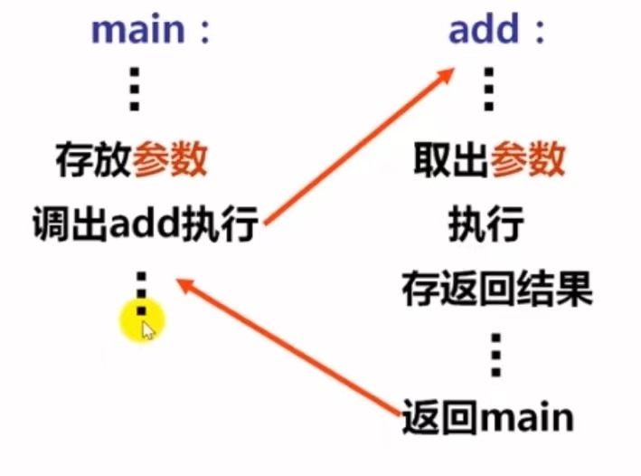
在调用add时使用call调用，并把下一条指令地址放入stack中等函数执行完毕return时再从stack中取出。
过程调用执行步骤(P为调用者，Q为被调用者)
- P将入口参数（实参）放到Q能访问到的地方(stack中)
- P保存返回地址（压栈），然后将控制转移到Q
- Q保存P的现场，并为自己的非静态局部变量分配空间
- Q执行Q的函数体
- Q恢复P的现场，释放局部变量空间
- Q取出返回地址，将控制转移到P
现场即为通用寄存器的内容，保存现场因为所有过程共享同一套寄存器
IA-32的寄存器使用约定
——调用者P保存寄存器：EAX、EDX、ECX (Q可用直接使用)
——被调用者Q保存寄存器：EBX、ESI、EDI(Q先保存到栈中再使用它们，并在返回P之前恢复它们的值)
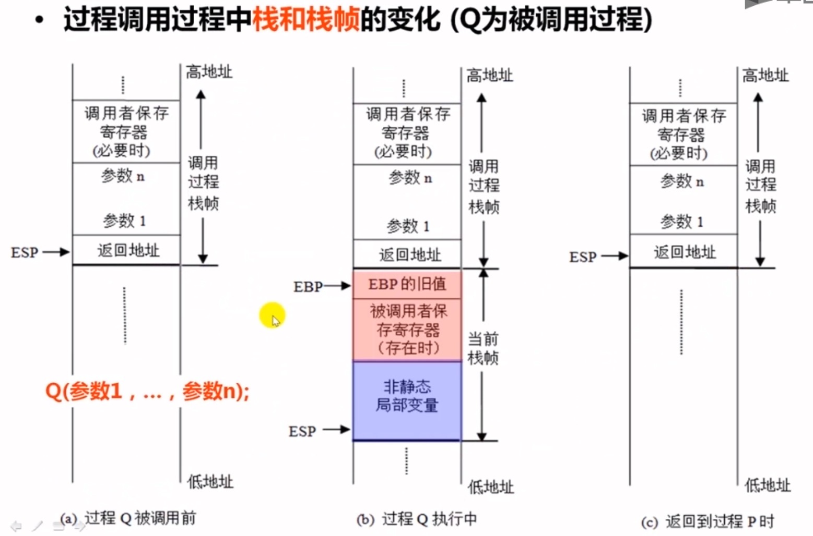
准备过程
- 准备阶段
形成帧底：push指令和mov指令
生成栈帧(如果需要的话)：sub指令或and指令
保存现场(如果有被调用者保存寄存器)：mov指令
- 过程（函数）体
分配局部变量空间，并赋值
具体处理逻辑，如果遇到函数嗲用时
准备参数：将实参送栈帧入口参数处
CALL指令：保存返回地址并转被调用函数
在EXA中准备返回参数
- 结束阶段
退栈：leave指令或pop指令
入口参数位置
函数传参，右边参数先入栈，左边参数最后入栈
main()
{
int a=15,b=22;
printf("a=%d\tb=%d\n",a,b);
swap(&a,&b);
//与直接传值swap(a,b)在机器语言上有什么区别，为什么传指针才能真正交换
printf("a=%d\tb=%d\n",a,b);
}
swap(int *x,int *y)
{
int t=*x;
*x=*y;
*y=t;
}
传递指针的实质
leal -8(%ebp), %eax //用eax寄存器存储ebp指针下8字节单位的地址 leal存放的是地址
movl %eax, 4(%esp) //将寄存器中地址作为参数放入栈帧中
leal -4(%ebp), %eax //同理针对b指针
movl %eax, (%esp)
call swap
swap:
pushl %ebp //压栈swap栈帧
movl %esp, %ebp
pushl %ebx //EBX是被调用者保存
//下略，见图
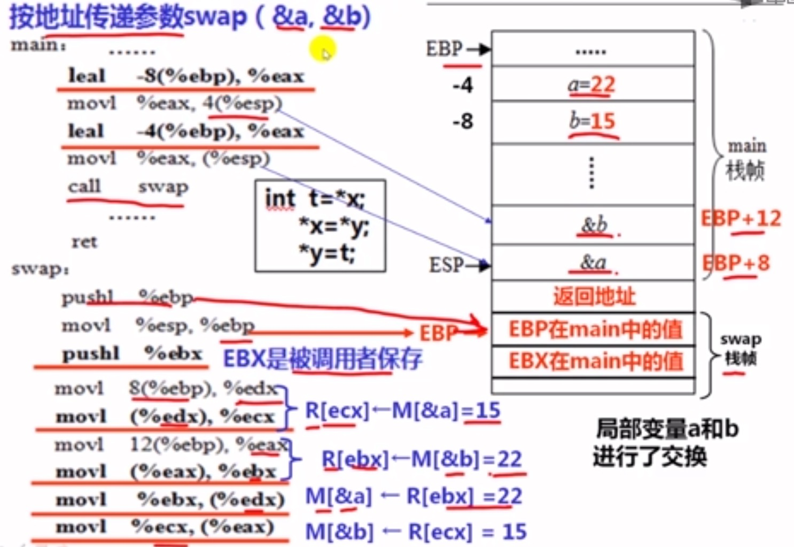
值传递时，不是使用 leal 指令将地址放入参数寄存器，而是将寄存器赋值的 movl 指令
过程调用例子分析
eg：
void test(int x, int *ptr)
{
if(x>0&&*ptr>0)
*ptr+=x;
}
void caller(int a, int y)
{
int x=a>0?a:a+100;
test(x,&y);
}
调用caller的过程为P，P中给出形参a和y的实参分别是100和200，画出相应栈帧中的状态
递归过程例子
int nn_sum(int n)
{
int result;
if(n<=0)
result=0;
else
result=n+nn_sum(n-1);
return result;
}
;esp栈顶指针，永远指向最上层一个栈帧的顶部
;ebp栈底指针，永远指向最上层一个栈帧的底部 ebp保存的内容是旧ebp值
汇编过程
;递归过程指令
pushl %ebp ;形成栈帧
movl %esp, %ebp
pushl %ebx ;调用过程现场压栈，此时esp栈顶指向EBX在P中的值这个位置
subl $4, %esp ;esp值减4，由于栈是向下的，所以减4则栈顶指向下一位空位
movl 8(%ebp), %ebx ;将参数n存入ebx寄存器
movl $0, %eax ;寄存器赋值0
movl $0, %ebx ;判断参数是不是小于等于0
jle .L2 ;小于则转到L2执行
leal -1(%ebx), %eax ;ebx内存放值自减1 ;leal直接赋值而movl是地址赋值
movl %eax, (%esp)
call nn_sum
addl %ebx, %eax ;此处也是ret返回的地址(call的下一条指令地址) ;该语句也实现了将每次的结果加到eax，然后更新ebx
.L2
addl $4, %wsp ;退栈
popl %ebx ;恢复现场
popl %ebp
ret ;return
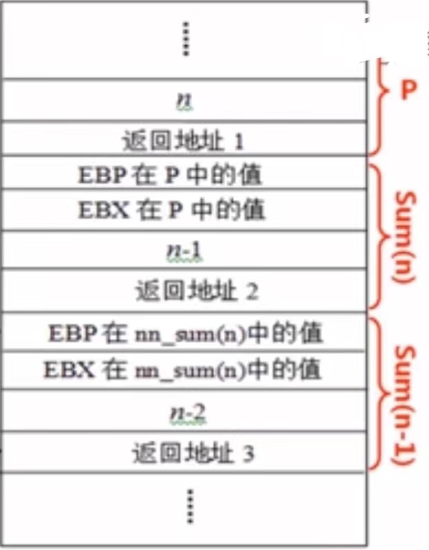
每次递归调用一次，都会形成一次栈帧，占用的栈的空间越来越多，造成栈溢出，并且准备阶段时间很长，所以递归时间增加很多额外不必要开销
循环语句的机器及代码
int get_cont(int *p1,int *p2)
{
if(p1>p2)
return *p2;
else
return *p1;
}
movl 8(%ebp), %eax ;eax存储第一个参数
movl 12(%ebp), %edx ;edx存储第二个参数
cmpl %edx, %eax ;比较量参数
jbe .L1 ;p1<=p2根据p1-p2结果
movl (%edx), %eax ;R[eax]=M[p2]
jmp .L2 ;无条件跳转到L2执行
.L1:
movl (%eax), %eax ;R[eax]=M[p1]
.L2:
switch-case语句举例
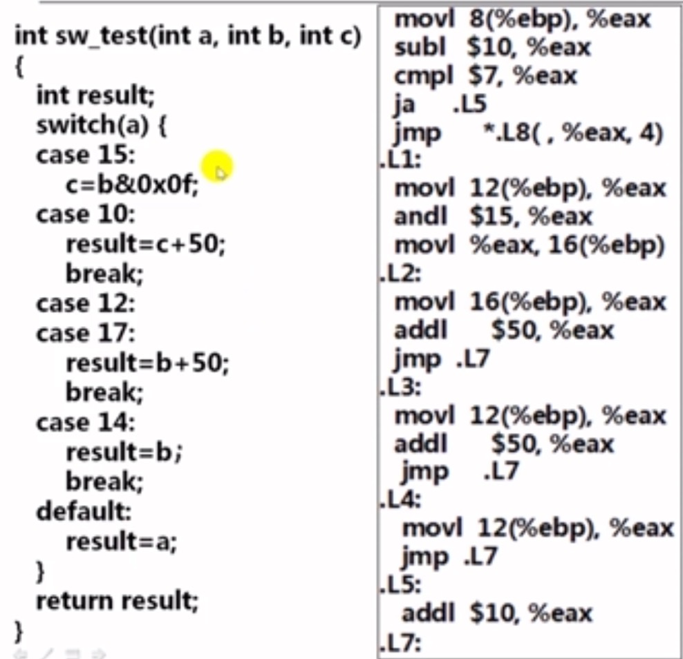
在比较的时候（if(a-10)>7则跳转L5）如果a是一个负数，那么作为无符号数的时候是一个很大的数，这样也能跳转到L5执行
jmp *.L8(,%eax,4) //跳转到.L8+4 *i处的地址
循环结构机器级表示
int nn_sum(int n)
{
int i;
int result=0;
for(i=0;i<=n;++i)
result+=i;
return result;
}
movl 8(%ebp),%ecx
movl $0,%eax
movl $1,%edx
cmpl %ecx,%edx
jg .L2 ;大于转移命令
.L1:
addl %edx,%eax
addl $1,%edx
cmpl %ecx,%edx
jle .L1 ;小于等于转移命令
.L2
最好只用ecx，eax，edx通用寄存器
andl ;按位与
orl ;按位或
shrl ;右移
shll ;左移
leal (%eax,%eax),%edx ;将eax的值乘2，即向右移一位
基本工具的使用
GCC调试工具
graph LR;
hello.c --预处理-->hello.i
hello.i --编译-->hello.s
hello.s --汇编-->hello.o
hello.o --链接-->hello
gcc -E hello.c -o hello.i
预编译过程将include中引入内容嵌入源程序中
gcc -S hello.i -o hello.s
对hello.i文件进行编译，生成汇编语言源程序
gcc -c hello.s -o hello.o
对.s文件进行汇编生成一个可重定位目标文件，汇编后是二进制文件，01表示的机器指令
gcc hello.o -o hello
将多个可重定位的目标文件和标准库函数链接合并成一个可执行目标文件的过程
gcc -o0 -m32 -g hello.c -o hello
-o0 //表示编译时采用的优化级别，0表示不用编译优化
-m32 //表示编译成32位的指令
-g //带调试信息
Objdump调试工具
反汇编二进制的目标文件
objdump -S hello.o>hello.txt
objdump -S hello>hello.txt
反汇编 -S选择表示在汇编后的内容中添加源代码，建议在gcc编译时使用 -g选项配合反编译时使用的 -S选项才能在反汇编上附上c语句
反汇编后每一条c语句下方一共有三块
左边代表机器指令的存储地址，中间是机器指令，右边是汇编语言
GDB调试工具
GDB调试一共有六步
- 启动gdb调试工具，加载要被调试的可执行文件
gdb [可执行文件名]
方法一，直接启动并加载
gdb
file [可执行文件名]
方法二，先启动，后加载
- 设置断点
break main //在main函数的入口处设置断点
break gdbtest.c:3 //在源程序的第3行设置断点
- 启动程序运行
run //启动程序，程序会在断点处停下来
- 查看程序运行时的当前状态
程序当前断点位置
当前已经执行哪些命令，下一步要执行哪一条命令（eip寄存器保存下一条将执行指令）,
i r eip显示eip寄存器的内容通用寄存器内容
存储器的单元内容
当前栈信息
x/yxb 地址y是显示的总字节数的值，按字节显示：清晰显示每一个字节的内容当想使用四字节为单位显示，
x/zxw 地址（可输入多个地址用空格隔开）$$z=\displaystyle\frac{y}{4}$$ 显示从esp指向的地址开始 ，按四字节显示：把4个字节作为一个信息组
- 继续执行下一条指令或语句
si //执行一条机器指令
s //执行一条c语句
- 退出gdb调试过程
quit //退出GDB调试过程
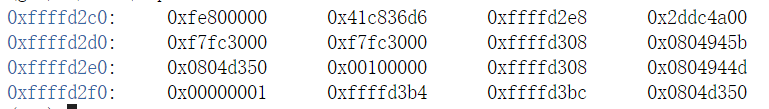
拆弹实验实操
拆弹实验实验报告
炸弹0
提示部分已经给出了解答过程，输出指定地址的字符串即可
炸弹1
这一部分是关于长浮点数转换成两部分整型数的题目
首先调用了sscanf函数得知需要输入参数，上面push了两个参数
接着输出存储输出范围的地址得到我们需要输入两个整数
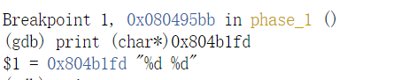
接下来分析代码
发现我们需要的长浮点数已经给出，不过后来转化为单精度浮点数存储，所以根据运算得到之后的值，并且拆分为两个整数得到最终结果
注释
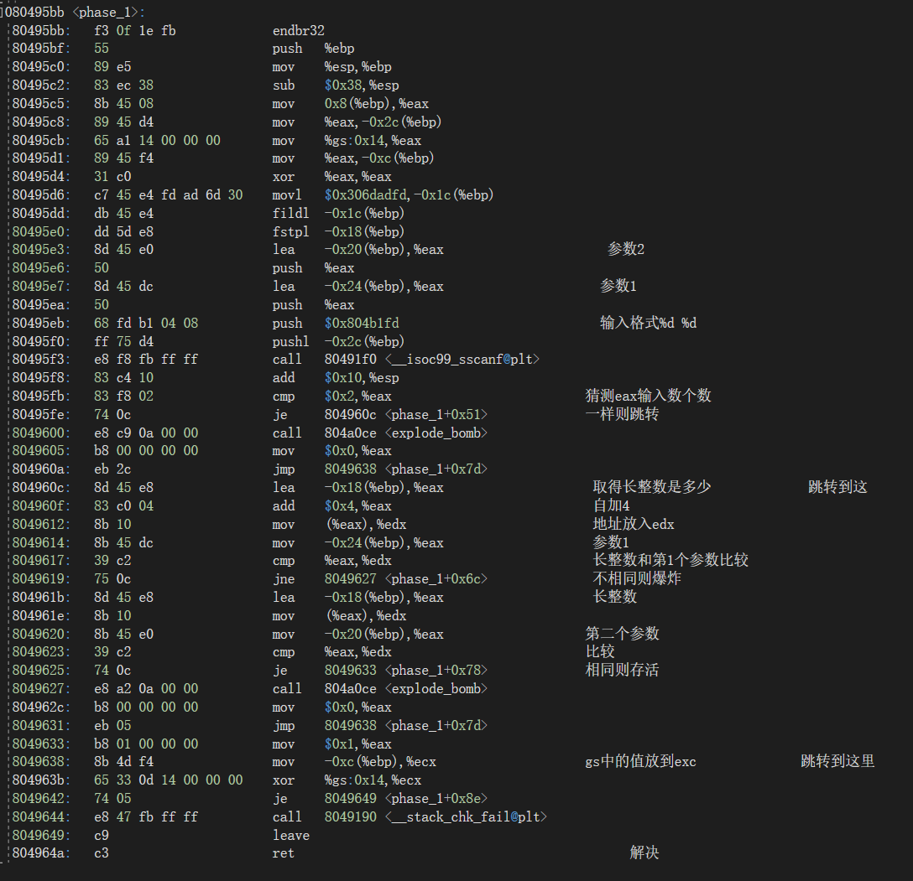
炸弹2
分析代码发现有一个循环结构，需要输入的第一个数在最开始已经给出了后来需要输入的数根据公式算出(其中i为循环次数) f[n]=f[n-1]-2*i+1 轻松得到要求输入的七个数字
注释
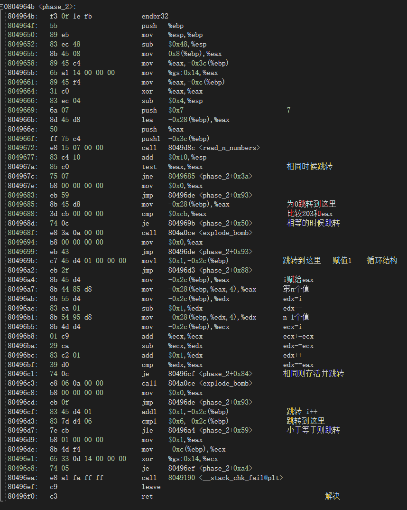
炸弹3
首先输出查看要求输入的数据类型和格式
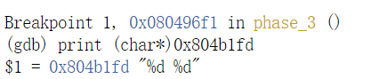
接着分析函数，我们发现了一个switch的选择结构
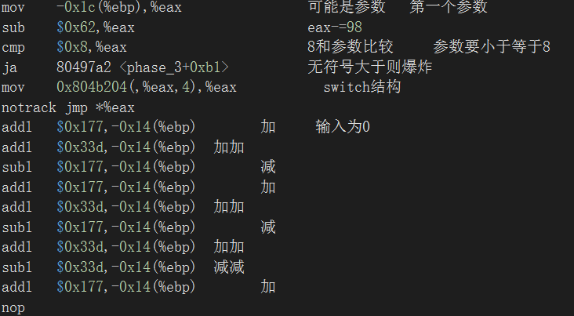
我们调试输出0x804b204的地址发现这个switch是根据我们输入的第一个参数-98后的值来更改后来比较时参数的变化，所以通过计算得到要求出入的两个数分别是多少
注释
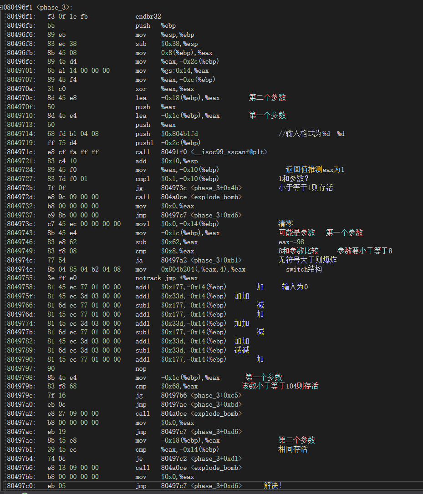
炸弹4
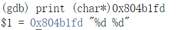
输入同样要求两个整数

猜测func4的递归代码，要求输入两个数，最后返回值需要是177
并且猜测v2>0,v3<=39
通过调试发现有一个地址内容是是0x63本以为是常数，后来调试发现应该是一个数组，根据输入的数选取数组的某一位
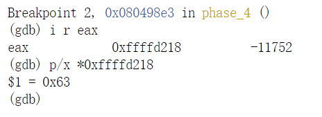
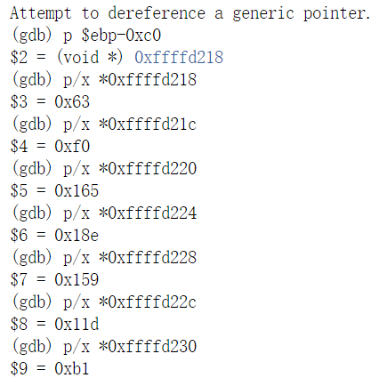
调试发现给定常数应该是一个数组，找到数组第6位正好是177
由结果反推代码推测应该是6 6，测试结果正确
注释
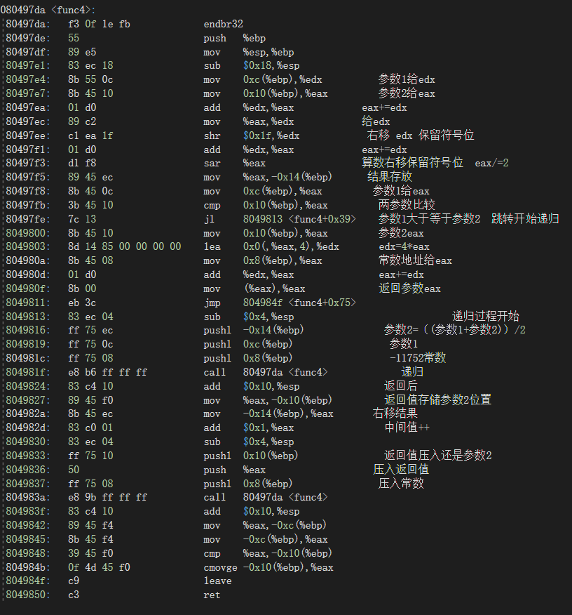
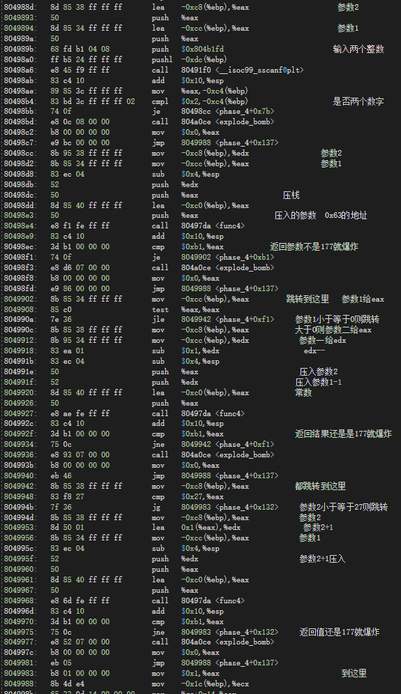
炸弹5
首先根据函数名得到我们需要传入一个字符串，且字符串长度为5
接着发现了一个循环结构，循环结构用到了字符串，以及一个未知数组(推测)，最终需要得到15这个值
gdb调试得到了数组中的数据

并且有一个与操作，推测可能每个字符转化后做与操作作为索引最终数组中的数相加得到结果15
与操作结果应该就是字母表的相对顺序
由于前面数字太大，继续查找数组，发现一个2，所以推测可能是iiieg，这样 2+2+2+4+5=15 结果正确！
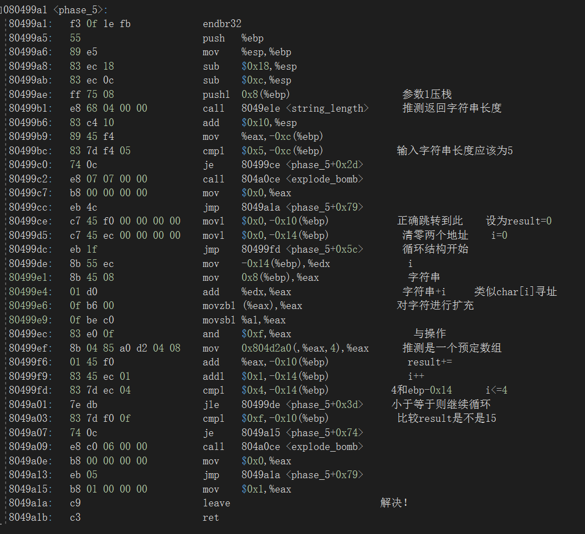
炸弹6
这里首先根据函数名知晓我们需要传入n个数据，之后我们看到第一层循环一共循环了七次
猜测需要传入七个数，并且每个数必须位于1和7之间，之后发现第一层循环中嵌套一层循环，通过代码可知数组中不能有重复的数字
之后找到第三个循环，是对数据进行排序过程
本题目其实是一个链表形式存放的数据格式，每个struct存放当前数，且存放数的编号以及下一个数的地址，用gdb逐个查找

数据依次是 3 8 0 1 6 9 5
按照从小到大排序应该是 3 4 1 7 5 2 6经验证正确


隐藏关
我们查看phase_defused代码，发现其中涉及到字符串
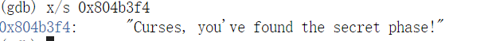
由于函数名叫strings_not_equal猜测需要额外输入一个字符串，调试得到字符串为
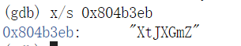
XtJXGmZ
经尝试该字符串加载第四关后面即可打开隐藏关
查看secret_phase代码得知输入值要在1~1001之中，并且和36传入fun7返回值是1才能不爆炸
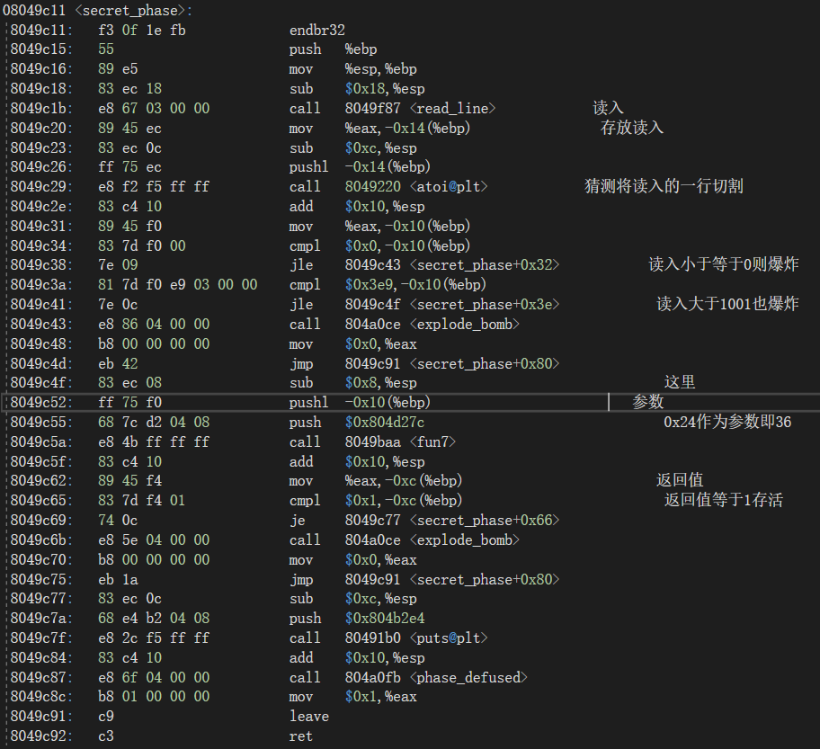
fun7代码推测源码为
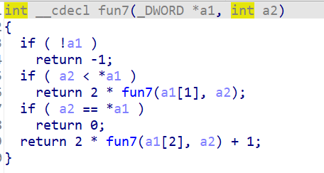
调试查看传入数组的全部数据查看发现这是一个链表得到如下数据，数以二叉树的结构进行存储的
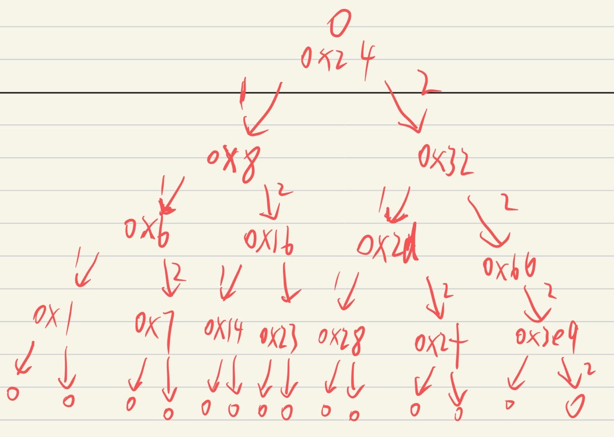
由于实在不能想出来递归结果，所以自己写程序暴力解题，得到结果是40，经验证正确
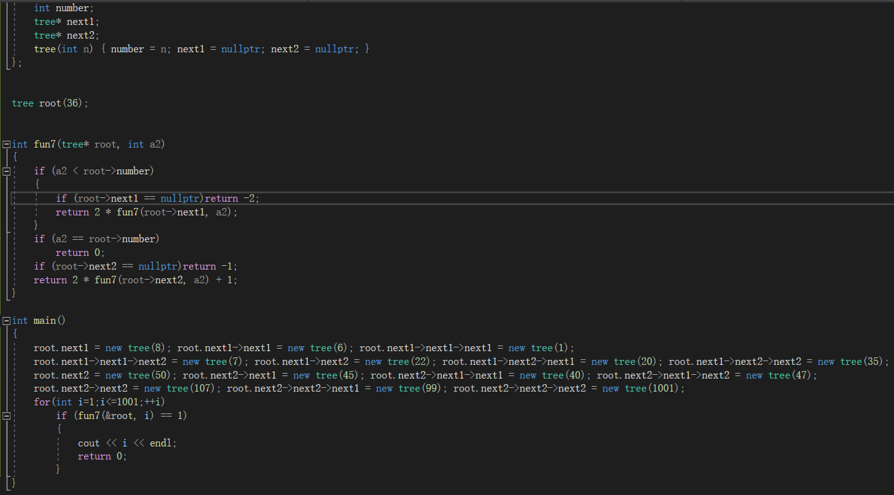
感受
这次拆弹作业真的很折磨，还好最后有惊无险的做完了，通过这次作业能理解汇编的代码了，更深入的了解数字的变化选择结构，循环结构，递归，链表，二叉树在计算机中实际是怎么存储的，能将我仅有的一点硬件方面的知识和程序结合起来，也同时了解了栈到底有什么样的作用，为什么要用栈。
同时，还能学习如何用gdb进行调试，断点在linux中的使用而不是visual studio中的简单打一个点而已，以及复杂的程序实际上就是很多简单的寄存器进行抽象，并且数据有对齐原则，又如何排列参数让参数占最小的空间。
不过最后拆弹确实是一个很折磨又很有意思的过程，逐步抽丝剥茧，根据一些线索进行猜想还原，最后再去调试，查看更多线索，就和看推理小说一样，最后全部解出来的时候反而没有解题过程中的推理快乐。